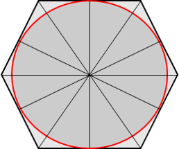
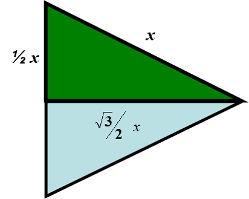
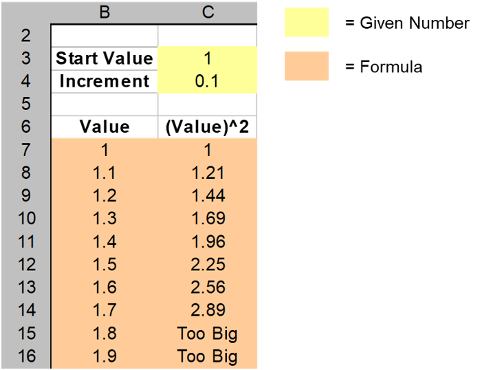
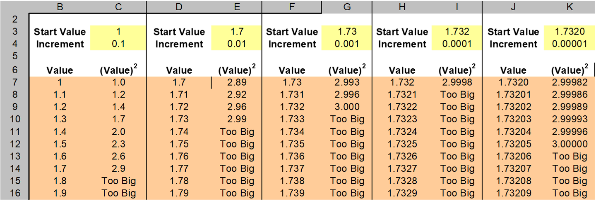
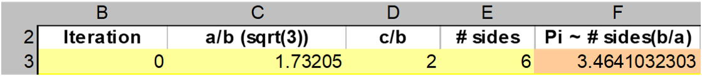
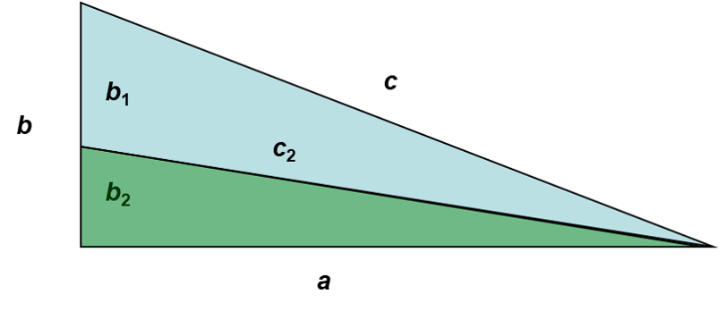
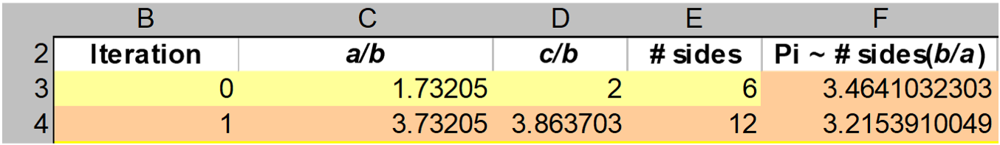

layout: true background-color: rgb(238, 245, 219) --- class: center, middle # ARHIMED IN ŠTEVILO PI --- ## Uvod <br> <div class="razdelek"> Razmerje med obsegom kroga in njegovim premerom je enako, ne glede na to, kako velik je krog. S tem razmerjem definiramo število pi. Število $\pi$ je razmerje med obsegom kroga in njegovim premerom. </div> <br> **Arhimed** (287 – 212 pr. n. št.) je bil briljanten grški matematik, ki je zaslužen za prvi sofisticiran približek števila $\pi$. Stare civilizacije so vedele, da je to število malo večje od 3, Grki pa so ugotovili, koliko večje je. --- ## Kako izmeriti obseg kroga? <br> Genialna tehnika, ki so jo izumili Grki in jo je spretno izkoristil Arhimed, je bila očrtati krogu pravilni večkotnik. Obseg kroga je potem kar približno enak obsegu pravilnega večkotnika. Vsak pravilni $n$-kotnik lahko razdelimo na $n$ skladnih enakokrakih trikotnikov, vsakega od teh pa na dva skladna pravokotna trikotnika. -- <center></center> --- ## Računanje približka za $\pi$ <br> Arhimed se je osredotočil na en sam pravokotni trikotnik in izračunal razmerje med dvema katetama pravokotnega trikotnika. <br> <center><img src="slika2.png" alt="pravokotni trikotnik" width="300"></center> -- Vemo, da je $\frac{b}{a} = \frac{2b}{2a} = \frac{\text{stranica}\ n\text{-kotnika}}{\text{premer kroga}}$ --- ## Računanje približka za $\pi$ <br> Če enačbo s prejšnje strani pomnožimo s številom stranic ($n$) pravilnega večkotnika, dobimo: <div class="razdelek"> $$ \frac{nb}{a} = \frac{\text{obseg}\ n\text{-kotnika}}{\text{premer kroga}} \approx \frac{\text{obseg kroga}}{\text{premer kroga}} = \pi $$ </div> <br> -- - Arhimed je začel z očrtanim 6-kotnikom in pri tem dobil pravokotne trikotnike, ki so bili Grkom dobro poznani. -- - Tudi mi bomo začeli s pravilnim 6-kotnikom. --- ## Približek za $\pi$ z uporabo pravilnega 6-kotnika <br> V primeru, ko krogu očrtamo pravilni 6-kotnik, dobimo posebno lepe pravokotne trikotnike. -- <center></center> -- S tem dobimo dve posebno lepi razmerji med stranicami: -- - $\frac{a}{b} = \sqrt{3}$ -- - $\frac{c}{b} = 2$ --- Naletimo pa na naslednji problem: ### Kako izračunati število $\sqrt{3}$ ? <br> -- - Vemo, da je to število med 1 in 2, saj velja: $1^2=1 < 3 < 4 = 2^2$. -- - S pomočjo tabele v Excelu bomo izračunali približek za $\sqrt{3}$. --- ### <span class="naloga">1. NALOGA: Računanje približka $\sqrt{3}$</span> * Izberi *začetno vrednost* in *korak*, s katerim se bodo vrednosti povečevale * *začetna vrednost naj bo 1* * *korak naj bo 0.1* * V prvem stolpcu naj bodo **vrednosti**, ki se začnejo z *začetno vrednostjo* in naraščajo za *korak* * V drugem stolpcu pa naj bodo **kvadrati vrednosti** iz prvega stolpca ali **"PREVELIKO"** * Uporabi funkcijo IF (`=IF(B7^2 < 3; B7^2; "Preveliko")`) <center></center> --- ### <span class="naloga">1. NALOGA: Računanje približka $\sqrt{3}$</span> * Dodaj še 4 bloke dveh stolpcev (še 4-krat ponovi zgornji postopek), da dobiš približek za $\sqrt{3}$, izračunan do 5. decimalnega mesta * Za novo *začetno vrednost* vzameš najboljši približek iz prejšnjega bloka dveh stolpcev (to je zadnji približek, katerega kvadrat je bil manjši od 3) * Za nov *korak* vzameš desetino prejšnjega *koraka* <center></center> --- ### <span class="naloga">2. NALOGA: Računanje približka $\pi$ z uporabo pravilnega 6-kotnika</span> * Poustvari tabelo (torej samo 1 vrstico), ki jo vidiš na spodnji sliki * V prvem stolpcu naj bo številka iteracije (začni z 0) * V drugem stolpcu naj bo razmerje $\frac{a}{b}=\sqrt{3}$ * uporabi približek, ki si ga izračunal v 1. nalogi * V tretjem stolpcu naj bo razmerje $\frac{c}{b}=2$ * V četrtem stolpcu naj bo število stranic $n$ * V tem primeru torej 6 * V petem stolpcu pa naj bo približek za $\pi$ * Izračunan po formuli od prej: $\pi \approx \frac{nb}{a} = \frac{n}{\frac{a}{b}}$ (`=E3/C3`) <center></center> -- Ta ocena ni zelo blizu $\pi$, zato bi za boljšo aproksimacijo želeli pametno povečati število stranic pravilnega večkotnika, ki smo ga očrtali krogu. --- ### Iterativno iskanje pravilnih večkotnikov s čedalje več stranicami <br> Arhimed je razpolovil kot pravokotnega trikotnika, ki je v središču pravilnega večkotnika in tako dobil nov pravokotni trikotnik. Novi pravokotni trikotnik pripada novemu pravilnemu večkotniku, ki ima več stranic, kot jih je imel prejšnji. -- <center></center> -- Koliko stranic bo imel na ta način dobljeni pravilni večkotnik? <button class="gumb" onclick="klik()">ODGOVOR</button> <label id="klik"></label> --- ### Iterativno iskanje pravilnih večkotnikov s čedalje več stranicami <br> Zanima nas še razmerje $\frac{a}{b_2}$, ki ga potrebujemo za izračun približka $\pi$. -- * Vemo: $\frac{c}{a}=\frac{b_1}{b_2}$ -- * Na levi strani prištejemo $\frac{a}{a}$, na desni pa $\frac{b_2}{b_2}$ - To pomeni, da na obeh straneh prištejemo 1 -- * Dobimo $\frac{c+a}{a}=\frac{b}{b_2}$ -- * Pomnožimo obe strani z $\frac{a}{b}$ -- * Dobimo: $\frac{a}{b_2}=\frac{c+a}{b}$ -- Torej novo razmerje, ki ga potrebujemo, dobimo iz prejšnjih dveh: <div class="razdelek"> $$\frac{a}{b_2}=\frac{a}{b}+\frac{c}{b}$$ </div> --- ### <span class="naloga">3. NALOGA: Računanje približka $\pi$</span> * Uporabi tablo iz 2. naloge in dodaj nove iteracije, tako da v vsaki naslednji uporabiš pravilni večkotnik z 2-krat več stranicami (kot je prikazano spodaj na sliki) - Novo razmerje $\frac{a}{b}$ dobiš s pomočjo prejšnje vrstice * $\frac{a}{b_2}=\frac{a}{b}+\frac{c}{b}$ (formula za celico C4: `=C3 + D3`) - Novo razmerje $\frac{c}{d}$ dobiš z uporabo Pitagorovega izreka * $\frac{c_2}{b_2}=\sqrt{\frac{a^2}{b_2^2}+\frac{b_2^2}{b_2^2}}$ * $\frac{c_2}{b_2}=\sqrt{\frac{a^2}{b_2^2}+1}$ (formula za celico D4: `=SQRT(C4^2 + 1)`) <center></center> * Razširi tabelo, da dobiš vsaj 16 iteracij.